Agama-v0.2.39-Updates
- New spv coins game and fujicoin (fjc)
- New Fugicoin in initial activate coin screen
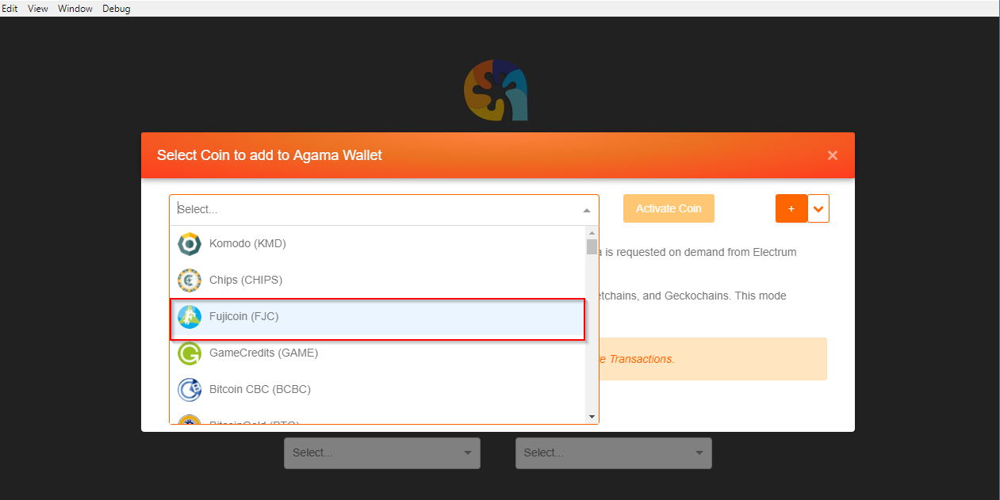
- New GameCredits (GAME) in initial activate coin screen
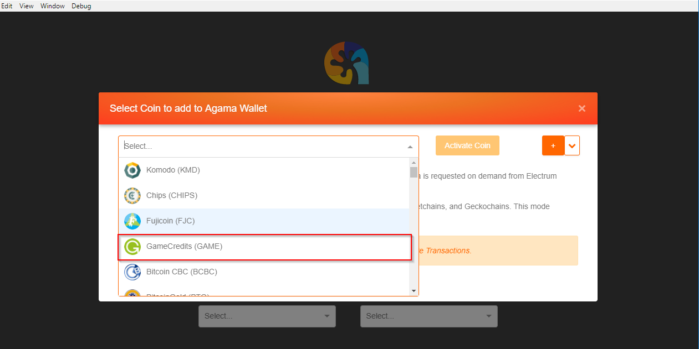
- Both new coins in a single wallet
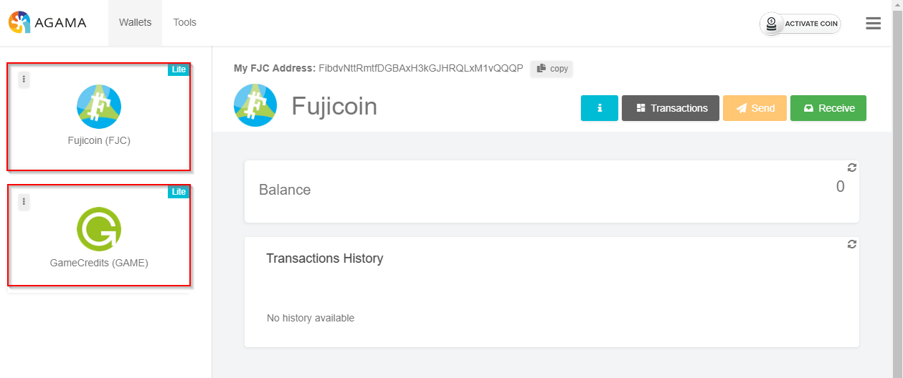
- New asset chain prlpay
- Pearl Pay (prlpay) has been added to the coin list SPV
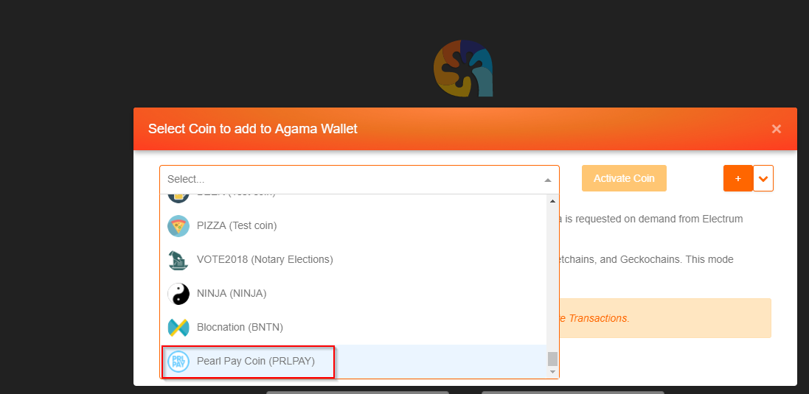
- Spv socket timeout settings option
- New socket timeout option added to Settings -> App Config
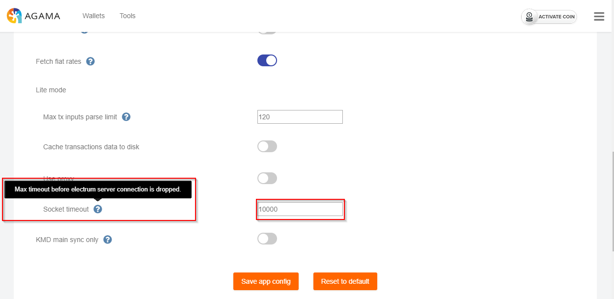
- Sensitive data blur toggle
- A new Menu option “Hide sensitive data” has been added, to show the data again reselect the menu option then select “Show sensitive data”
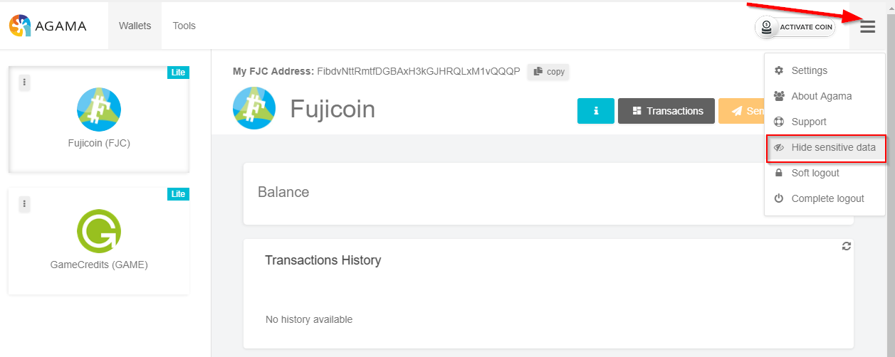
- The public address will now be blurred out
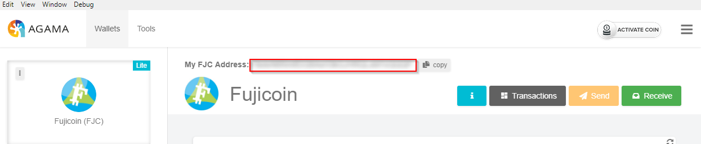
- KV Lite
- KV view screen has been added to the Transaction screen for KV, BEER, and PIZZA coins
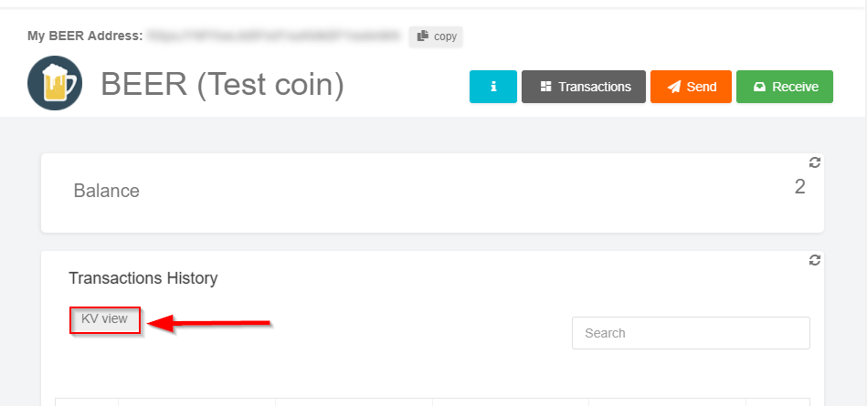
- In the send screen the Send KV button has been added allowing the user to enter a Tag, Title, and Content message
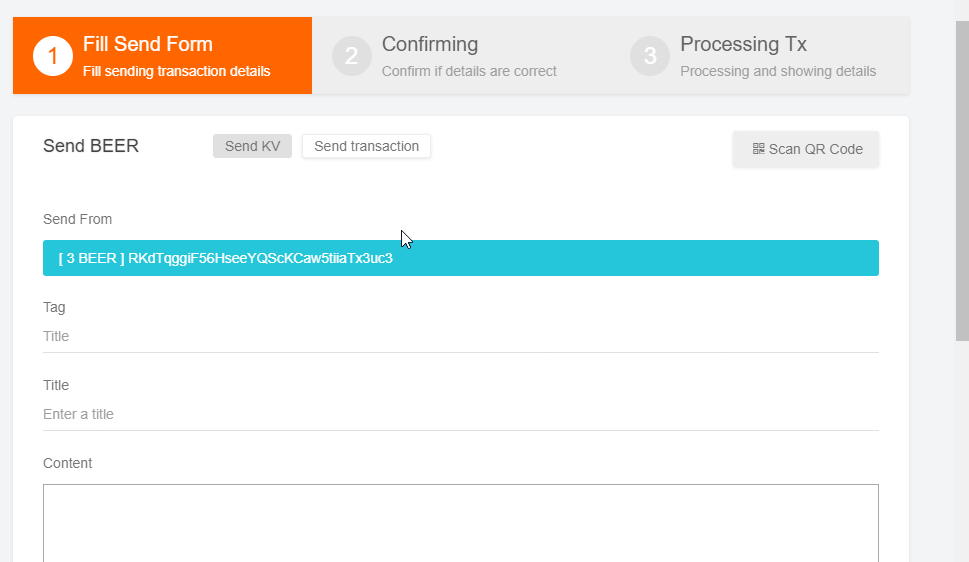
- Once created the kv tx will now appear in the kv view, select the blue content icon to view it's contents
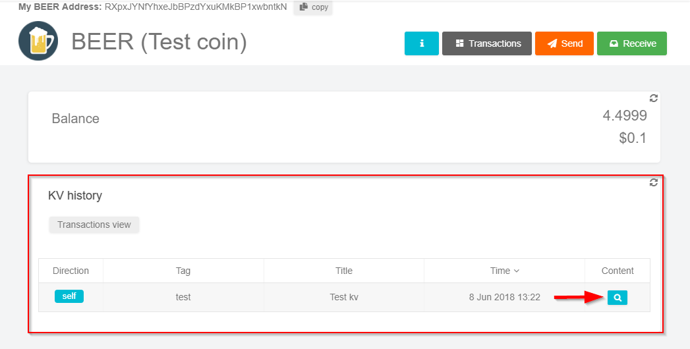
- From the content icon the send kv info may be viewed
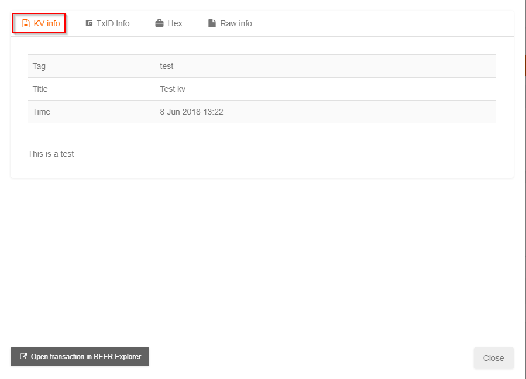